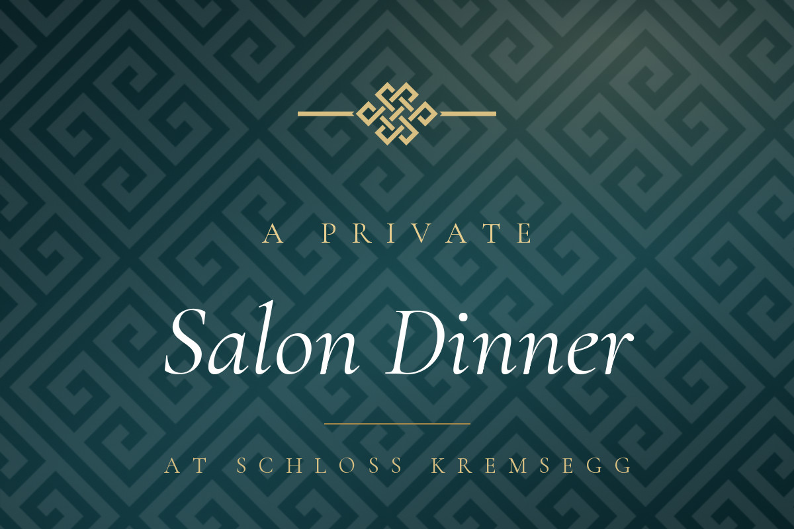

An intimate experience of music and art to open the heart and mind beneath the skies of an Austrian castle.
Dear Bibi Burton,
On the evening of Saturday, 12 September 2026, a selected group of guests will gather by invitation at a baroque castle in the heart of Upper Austria — a place that has held space for learning, music, and quiet revolutions of thought since the year 1230.
It becomes, for one evening, the setting for a private benefit dinner in support of a new kind of university — and an evening of exceptional conversation, hosted by the world-renowned Buddhist teacher Chökyi Nyima Rinpoche.
What does it mean to lead as a force for flourishing in an interconnected world?
Date Saturday, 12 September 2026 |
Time 17:00Reception · dinner to follow |
Place Schloss KremseggUpper Austria |
Host Chökyi Nyima Rinpoche |
To maintain the intimacy of the evening, only a small number of places are available. Please let us know by 20 August if you would like to accept this invitation. As capacity is limited, places will be allocated in the order that replies are received.
View the Invitation